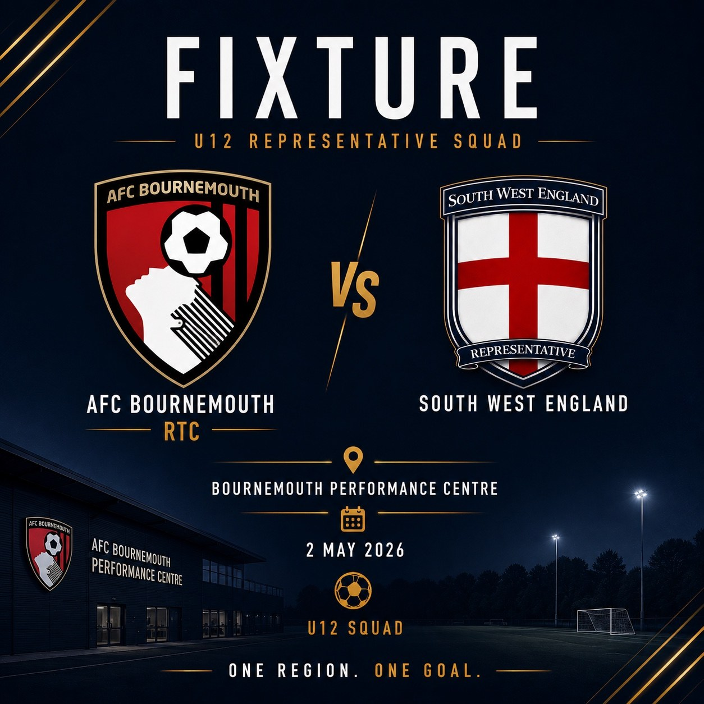

Representative Fixtures
Academy Fixtures
Selected squads compete in regular academy-level fixtures designed to challenge and expose players to higher-level football environments.
Compete
Represent the South West.
Players who show the required level, attitude and commitment within training camps may be selected to represent South West England Representative Football in academy fixtures.
These fixtures help players test themselves against strong opposition while continuing to play for their existing club.

High-level fixtures. Real development.
Academy fixtures give players a platform to compete, learn and understand the standards required in professional football environments.
Enquire About Academy Fixtures